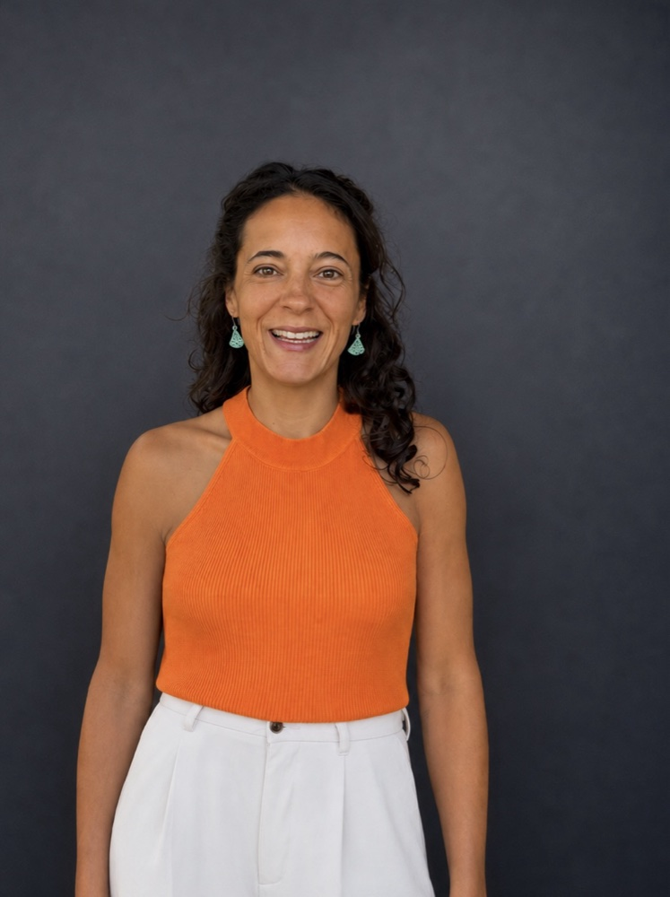
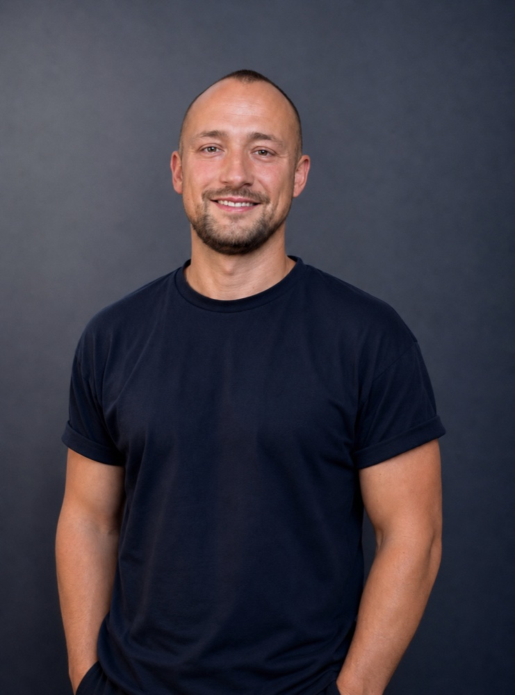

Zwei Wege.
Ein Studio.
Kurzprofile, Ausbildung und Stationen der beiden Köpfe hinter studio² — Architektur & Design und Mathematik & Code.

Tina PalArchitektur & Design
Bauleitung und Objektüberwachung mit Schwerpunkt auf Instandsetzung, Modernisierung und Bauen im Bestand — von denkmalgeschützten Dachtragwerken bis zu Neubauten für die öffentliche Hand. Daneben ein wachsendes Interesse an UX/UI Design und digitaler Gestaltung mit Figma.
- 2017–2019 M.Sc. Architektur und Stadtplanung — Universität StuttgartAbschluss mit Auszeichnung (1,2); Auslandssemester am Kengo Kuma Laboratory, Universität Tokio
- 2013–2017 B.Sc. Architektur und Stadtplanung — Universität StuttgartGrundlagenausbildung in Entwurf, Konstruktion und Darstellung
- 2005–2013 Allgemeine Hochschulreife — Gymnasium am Kaiserdom, SpeyerAltsprachliches Gymnasium
- seit 2025 Bauleitung nach LBO — GoldbeckInstandsetzung, Instandhaltung und Modernisierung von Bestandsgebäuden; Ausschreibungen und Vergabeverfahren
- 2021–2025 Objektüberwachung & Bauleitung nach LBO — Birk Heilmeyer und Frenzel Architekten, StuttgartEigenverantwortliche Bauleitung u. a. beim Neubau Polizeirevier Horb, der Instandsetzung des denkmalgeschützten Holzdachtragwerks der Multihalle Mannheim, dem Betty-Hirsch-Schulzentrum und dem Prüfweinlabor LVWO Weinsberg; Ausschreibung, Vergabe und Nachtragsmanagement
- 2020–2021 Akademische Mitarbeiterin — Universität StuttgartInstitut für Raumkonzeptionen und Grundlagen des Entwerfens (Prof. Markus Allmann); Seminarleitung, Betreuung von Studierenden, Koordination der Stuttgarter Change Labs
- 2018–2019 Wissenschaftliche Hilfskraft — Universität StuttgartInstitut für Raumkonzeptionen sowie Fakultätswerkstatt Architektur und Stadtplanung; Grafiken, Veranstaltungen, Modellbau und Studierendenbetreuung
- 2018 Internationales Praktikum — Kengo Kuma & Associates, Tokio3D-Modellierung und Perspektiven für den Wettbewerbsbeitrag „Desert Resort in Abu Dhabi“
- 2017–2018 Werkstudentin — Studio Yonder, StuttgartIntegratives Wohnprojekt „Wolle | Haus am Park“, Tübingen; Detailzeichnungen und Ausschreibungen
- 2016 Internationales Praktikum — workshop architecten, AmsterdamModernisierung einer Loftwohnung und der Werkstatt der Akademie der Architektur, Entwurf einer Kapelle in Utrecht; technische Zeichnungen, Visualisierungen, Möbelentwürfe
- 2010–2017 Frühe Praxiserfahrung — poonamdesigners, Ed. Züblin AG, behnisch architekten, Gregor Hoffmann ArchitektProduktdesign für WMF, Gebäudezertifizierung nach DGNB, Innenraumgestaltung Dorotheen Quartier Stuttgart sowie erste Baustellen- und Zeichenerfahrung
- 2019 Masterabschluss mit Auszeichnung (1,2)Universität Stuttgart; Publikation der Masterarbeit „Die Leere Indiens“ auf BauNetz
- 2020 Stipendium der gmp Stiftung (AAC)Leistungsabhängiges Stipendium, Workshop „Nantesbuch“, Hamburg
- 2018 Baden-Württemberg-StipendiumBegabungsabhängige Förderung für den Studienaufenthalt in Japan
- 2018–2025 Begegnungsraum e.V., StuttgartVereinsgründung 2020, Vereinsvorständin bis 2025; Veranstaltungen, Fördergelder, Engagementpflege
- seit 2025 Bürgerverein Bad Dürkheim e.V.Bei- und Fahrerin des Bürgerbusses für Senior*innen und mobilitätseingeschränkte Personen; Begleitung zu Arztbesuchen, Einkäufen, Sport- und Freizeitveranstaltungen
- 2016 Freundeskreis Flüchtlinge, StuttgartInitiatorin des Projekts „Frauenfrühstück“; persönliche Betreuung und Ausflüge
- AutoCAD
- Vectorworks
- Rhinoceros 3D
- Adobe Creative Suite
- Orca AVA
- Bauleitung LPH 6–9
- Nachtragsmanagement
- Figma
- UX/UI Design
- Interface Design
- Prototyping
- Deutsch — Muttersprache
- Niederländisch — Muttersprache
- Englisch — fließend
- Französisch — Grundkenntnisse

Patrick BossertMathematik & Code
Promovierter Mathematiker mit Schwerpunkt Statistik — von der Forschung zu stochastischen partiellen Differentialgleichungen bis zur Entwicklung datengetriebener BI-Lösungen und Cloud-Datenplattformen als Consultant. Verbindet mathematische Modellierung und Softwareentwicklung mit UX/UI-Konzeption und Prototyping in Figma — für Anwendungen, die analytisch fundiert und zugleich intuitiv nutzbar sind.
- 2020–2024 Promotion (Dr. rer. nat.), Mathematik — Universität WürzburgStatistik für stochastische partielle Differentialgleichungen in einer und mehreren Raumdimensionen
- 2017–2020 M.Sc. Wirtschaftsmathematik — Universität MarburgSchwerpunkt Wahrscheinlichkeitstheorie & Statistik; Abschlussnote 1,3 (sehr gut), Masterarbeit mit 0,7 (sehr gut)
- 2013–2017 B.Sc. Wirtschaftsmathematik — Universität MarburgAbschlussnote 1,7 (gut)
- 2005–2013 Abitur — Nikolaus-von-Weis-Gymnasium, SpeyerDaneben 2011–2013 Vorstudium Komposition an der Hochschule für Musik und Darstellende Kunst Mannheim
- seit 2026 Consultant — d-fine GmbHMigration von Qlik-Analysen zu Power BI für ein Unternehmen aus der Mobilitätsbranche; Entwicklung von Power BI Dataflows, Refactoring der SQL-Logik, UX-Konzeption und Screendesign des Dashboards in Figma für eine intuitive Nutzerführung sowie Aufbau eines strukturierten Feedback- und Fehlermeldeprozesses
- 2025–2026 Consultant — d-fine GmbHKonzeption einer cloudbasierten Analyseplattform für Bus- und On-Demand-Verkehre eines ÖPNV-Verkehrsverbunds; Datenarchitektur in Azure, automatisierte Python-Pipelines, geobasierte Analysen sowie ein Power-BI- und Plotly-Dash-Dashboard. Eigenständige UX/UI-Konzeption des Figma-basierten Dashboard-Designs inkl. User Flows und Informationsarchitektur für unterschiedliche Nutzergruppen im öffentlichen Nahverkehr
- 2024–2025 Consultant — d-fine GmbHData-Quality-Checks und Power-BI-Reporting für einen internationalen Rückversicherer; Konzeption intuitiver Dashboard-Strukturen und Reporting-Anwendungen zur Analyse komplexer Versicherungsdaten (IFRS17), inklusive Prototypen für Disclosure-Reports
- 2020–2023 Wissenschaftlicher Mitarbeiter — Universität WürzburgLehrstuhl für Angewandte Stochastik; Übungs- und Prüfungsbetrieb, Forschung und Simulationsentwicklung zu stochastischen partiellen Differentialgleichungen
- 2016–2020 Tutor & Wissenschaftliche Hilfskraft — Universität MarburgTutorien und Dozententätigkeit in Stochastik, linearer Algebra und Numerik (R, Matlab); Datenvalidierung und statistische Analysen am Institut für Medizinische Biometrie und Epidemiologie
- privat Software- & App-Projekte mit FigmaEntwicklung eigener App-Konzepte und User Interfaces, Wireframes, User Flows und klickbarer Prototypen; iterative Verbesserung von Bedienkonzepten für mobile Anwendungen
- 2024 Statistical structure and inference methods for discrete high-frequency observations of SPDEs in one and multiple space dimensionsDissertation, Universität Würzburg
- 2024 Parameter estimation for second-order SPDEs in multiple space dimensionsStatistical Inference for Stochastic Processes, 27, 485–583
- 2023 Efficient parameter estimation for parabolic SPDEs based on a log-linear model for realized volatilitiesmit M. Bibinger — Japanese Journal of Statistics and Data Science, 6.1: 407–429
- 2025 Power BI Data Analyst AssociateMicrosoft-Zertifizierung
- 2020 M.Sc.-Abschluss mit 1,3 (sehr gut)Masterarbeit „Parameterschätzung für stochastische partielle Differentialgleichungen" mit 0,7 (sehr gut)
- Power BI & DAX
- SQL
- Azure
- Databricks
- Power Query
- Excel
- Python
- R
- Matlab
- Java
- Swift/SwiftUI
- LaTeX
- macOS
- Figma
- Wireframes & User Flows
- Screen Design & Prototyping
- Informationsarchitektur
- Agile Produktentwicklung (Scrum)
- Deutsch — Muttersprache
- Englisch — fließend (B2)